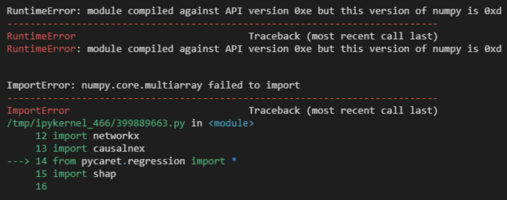

<!DOCTYPE html>
<html>
<head>
	<meta charset="utf-8" />
	<meta http-equiv="X-UA-Compatible" content="IE=edge"><title>PyCaretでSHAPを使った`interpret_model()`を実行するとエラーになる - 頑張らないために頑張る</title><meta name="viewport" content="width=device-width, initial-scale=1">
	<meta property="og:title" content="PyCaretでSHAPを使った`interpret_model()`を実行するとエラーになる" />
<meta property="og:description" content=" 前提 Pythonで機械学習をする際に有用なライブラリPyCaretの1機能であるinterpret_mode()を使うと、SHAPを利用したモデルの解釈をPyCaretから実行できるようになります。
pip install pycaret pip install shap この2行（正確にはinterpretも必要なプロットがあったりするけど）だけで、基本的にはPyCaretからSHAPが使えるようになるので非常に便利です。とくにNotebook上でPyCaretだけimportすればよく、import shapすら必要ありません。あとはinterpret_mode()と記述して、create_model()しておいたモデルについてプロットするだけです。
本来はそれだけのはずなのですが。
ええ、エラーになってしまったのですよ。
エラー内容 ImportError: numpy.core.multiarray failed to importRuntimeError: module compiled against API version 0xe but this version of numpy is 0xd interpret_mode()を実行したところ、上記のようなエラーが発生しました。importの実行でエラーになってしまい、これから先に進みません。
場合によっては、importは実行できるもののinterpret_model()を実行した箇所で似たようなエラーになるケースにも遭遇しました（ただし、こちらについては後述）。
さらに解せないのは、同じコードでつい数日前までは実行できていたことです。数日前にinterpret_model()を正常に使っていたコンテナからDockerfileを持ってきて、それを元に新しくコンテナをビルドした環境で同じコードを実行したらエラーになる、という謎なシチュエーション。エラーメッセージを見るとNumPyが犯人っぽいけど・・・？
原因 Numbaのバージョンアップのせい。
実はNumbaの更新履歴を見てみると、2021年8月21日にバージョン0.54がリリースされていることがわかります。これが直接の原因です。
PyCaretは、NumPyなら後述のようにバージョン指定していますが、Numbaについてはとくにバージョン指定がありません。そのため、PyCaretをインストールするとNumbaは最新版がインストールされます。現時点（2021年9月1日）では0.54がインストールされます。ところが、このバージョンでinterpret_model()を実行すると、さっきのようなエラーが表示されてしまい、処理が異常終了してしまいます。
「数日前までは動いてた」ってのもコレが原因。たまたま8月21日以前にPyCaretの環境をDockerコンテナにて構築した際は、Numbaがバージョン0.53.1でインストールされたため問題なく動作していました。ところが、8月21日以降にPyCaretの環境を構築するとNumbaは最新バージョンをインストールしてしまいます。そのため、interpret_model()が正常に動作していた環境とは厳密には異なる環境になっていたわけです。
なお、エラーメッセージからしてNumPyが悪いように見えますが、これは完全に濡れ衣です。PyCaretはNumPyのバージョン1.19.5を指定している（以上でも以下でもなく==で指定）ため、少なくともフツーにpipするならこれ以外のバージョンがインストールされることはありません。
回避策 インストールするNumbaのバージョンを指定すればいいわけです。単純ですね。
numba==0.53.1 自分は、上記のように0.53.1をインストール対象のバージョンとして指定しています。コンテナであれば、上記のようにバージョン指定したうえでコンテナをリビルドすれば問題なくinterpret_model()が実行できるようになるはずです。
（参考）別解 基本的には上記のようにインストールするNumbaのバージョンを指定すれば問題ないはずですが、そんなことをしなくてもエラーになったセルを再度実行することで、何事もなかったかのように処理が通るケースも確認しました。なんでやねん。とくにimport部分ではなくinterpret_model()のセルでエラーを吐いているケースでは、単純に再実行するだけで処置が通りました。なんでやねん。理由は謎です。
なお、import部分でエラーになってしまうケースでは、この単純に再実行する方法は使えない（同じエラーが出続ける）ので、Numbaのバージョン指定を行うべきです。
いずれにせよ、なぜimport部分でコケるケースとコケないケースが存在するのかは謎です。とはいえ、エラーになる条件がいまいちはっきりせず、仮に再実行で処理の継続は可能とは言っても毎回エラーの度に再実行するのは手間なので、基本的には前述の通りNumbaのバージョン指定することがベターだと思います。
参考  Numba Numba history  " />
<meta property="og:type" content="article" />
<meta property="og:url" content="https://ysko909.github.io/posts/get-error-when-use-interpret-model-with-pycaret-and-shap/" /><meta property="article:published_time" content="2021-09-01T23:51:17&#43;09:00"/>
<meta property="article:modified_time" content="2021-09-01T23:51:17&#43;09:00"/><meta name="twitter:card" content="summary"/>
<meta name="twitter:title" content="PyCaretでSHAPを使った`interpret_model()`を実行するとエラーになる"/>
<meta name="twitter:description" content=" 前提 Pythonで機械学習をする際に有用なライブラリPyCaretの1機能であるinterpret_mode()を使うと、SHAPを利用したモデルの解釈をPyCaretから実行できるようになります。
pip install pycaret pip install shap この2行（正確にはinterpretも必要なプロットがあったりするけど）だけで、基本的にはPyCaretからSHAPが使えるようになるので非常に便利です。とくにNotebook上でPyCaretだけimportすればよく、import shapすら必要ありません。あとはinterpret_mode()と記述して、create_model()しておいたモデルについてプロットするだけです。
本来はそれだけのはずなのですが。
ええ、エラーになってしまったのですよ。
エラー内容 ImportError: numpy.core.multiarray failed to importRuntimeError: module compiled against API version 0xe but this version of numpy is 0xd interpret_mode()を実行したところ、上記のようなエラーが発生しました。importの実行でエラーになってしまい、これから先に進みません。
場合によっては、importは実行できるもののinterpret_model()を実行した箇所で似たようなエラーになるケースにも遭遇しました（ただし、こちらについては後述）。
さらに解せないのは、同じコードでつい数日前までは実行できていたことです。数日前にinterpret_model()を正常に使っていたコンテナからDockerfileを持ってきて、それを元に新しくコンテナをビルドした環境で同じコードを実行したらエラーになる、という謎なシチュエーション。エラーメッセージを見るとNumPyが犯人っぽいけど・・・？
原因 Numbaのバージョンアップのせい。
実はNumbaの更新履歴を見てみると、2021年8月21日にバージョン0.54がリリースされていることがわかります。これが直接の原因です。
PyCaretは、NumPyなら後述のようにバージョン指定していますが、Numbaについてはとくにバージョン指定がありません。そのため、PyCaretをインストールするとNumbaは最新版がインストールされます。現時点（2021年9月1日）では0.54がインストールされます。ところが、このバージョンでinterpret_model()を実行すると、さっきのようなエラーが表示されてしまい、処理が異常終了してしまいます。
「数日前までは動いてた」ってのもコレが原因。たまたま8月21日以前にPyCaretの環境をDockerコンテナにて構築した際は、Numbaがバージョン0.53.1でインストールされたため問題なく動作していました。ところが、8月21日以降にPyCaretの環境を構築するとNumbaは最新バージョンをインストールしてしまいます。そのため、interpret_model()が正常に動作していた環境とは厳密には異なる環境になっていたわけです。
なお、エラーメッセージからしてNumPyが悪いように見えますが、これは完全に濡れ衣です。PyCaretはNumPyのバージョン1.19.5を指定している（以上でも以下でもなく==で指定）ため、少なくともフツーにpipするならこれ以外のバージョンがインストールされることはありません。
回避策 インストールするNumbaのバージョンを指定すればいいわけです。単純ですね。
numba==0.53.1 自分は、上記のように0.53.1をインストール対象のバージョンとして指定しています。コンテナであれば、上記のようにバージョン指定したうえでコンテナをリビルドすれば問題なくinterpret_model()が実行できるようになるはずです。
（参考）別解 基本的には上記のようにインストールするNumbaのバージョンを指定すれば問題ないはずですが、そんなことをしなくてもエラーになったセルを再度実行することで、何事もなかったかのように処理が通るケースも確認しました。なんでやねん。とくにimport部分ではなくinterpret_model()のセルでエラーを吐いているケースでは、単純に再実行するだけで処置が通りました。なんでやねん。理由は謎です。
なお、import部分でエラーになってしまうケースでは、この単純に再実行する方法は使えない（同じエラーが出続ける）ので、Numbaのバージョン指定を行うべきです。
いずれにせよ、なぜimport部分でコケるケースとコケないケースが存在するのかは謎です。とはいえ、エラーになる条件がいまいちはっきりせず、仮に再実行で処理の継続は可能とは言っても毎回エラーの度に再実行するのは手間なので、基本的には前述の通りNumbaのバージョン指定することがベターだと思います。
参考  Numba Numba history  "/>
<link href="https://fonts.googleapis.com/css?family=Ubuntu:300,400,300italic,400italic|Raleway:200,300"
		rel="stylesheet">

	<link rel="stylesheet" type="text/css" media="screen" href="https://ysko909.github.io/css/normalize.css" />
	<link rel="stylesheet" type="text/css" media="screen" href="https://ysko909.github.io/css/main.css" />
	<link rel="stylesheet" type="text/css" href="https://ysko909.github.io/css/dark.css"
		media="(prefers-color-scheme: dark)"  />
	<script src="https://cdn.jsdelivr.net/npm/feather-icons/dist/feather.min.js"></script><script src="https://ysko909.github.io/js/main.js"></script>
	<script data-ad-client="ca-pub-2615583270378842" async
		src="https://pagead2.googlesyndication.com/pagead/js/adsbygoogle.js"></script>

	<script data-ad-client="ca-pub-2615583270378842" async
		src="https://pagead2.googlesyndication.com/pagead/js/adsbygoogle.js"></script>
</head>
<body>
	<div class="container wrapper post">
		<div class="header">
	<h1 class="site-title">頑張らないために頑張る</h1>
	<div class="site-description"><h2>ゆるく頑張ります</h2><nav class="nav social">
			<ul class="flat"><a href="https://twitter.com/unknown_strings" title="Twitter"><i data-feather="twitter"></i></a><a href="https://github.com/ysko909" title="Github"><i data-feather="github"></i></a><a href="/index.xml" title="RSS"><i data-feather="rss"></i></a></ul>
		</nav>
	</div>

	<nav class="nav">
		<ul class="flat">
			
			<li>
				<a href="/">Home</a>
			</li>
			
			<li>
				<a href="/about">About</a>
			</li>
			
			<li>
				<a href="https://forms.gle/mtbEheX7qDrZfKPP8">Contact</a>
			</li>
			
			<li>
				<a href="ppolicy/">Privacy policy</a>
			</li>
			
			<li>
				<a href=""></a>
			</li>
			
		</ul>
	</nav>
</div>


		<div class="post-header">
			<h1 class="title">PyCaretでSHAPを使った`interpret_model()`を実行するとエラーになる</h1>
			<div class="meta">Posted at &mdash; Sep 1, 2021</div>
		</div>

		<div class="markdown">
			

<h2 id="前提">前提</h2>

<p>Pythonで機械学習をする際に有用なライブラリ<a href="https://pycaret.org/">PyCaret</a>の1機能である<code>interpret_mode()</code>を使うと、SHAPを利用したモデルの解釈をPyCaretから実行できるようになります。</p>
<div class="highlight"><pre style="background-color:#fff;-moz-tab-size:4;-o-tab-size:4;tab-size:4"><code class="language-console" data-lang="console">pip install pycaret
pip install shap</code></pre></div>
<p>この2行（正確には<code>interpret</code>も必要なプロットがあったりするけど）だけで、基本的にはPyCaretからSHAPが使えるようになるので非常に便利です。とくにNotebook上でPyCaretだけ<code>import</code>すればよく、<code>import shap</code>すら必要ありません。あとは<code>interpret_mode()</code>と記述して、<code>create_model()</code>しておいたモデルについてプロットするだけです。</p>

<p>本来は<strong>それだけのはず</strong>なのですが。</p>

<p>ええ、<strong>エラーになってしまった</strong>のですよ。</p>

<h2 id="エラー内容">エラー内容</h2>
<div class="highlight"><pre style="background-color:#fff;-moz-tab-size:4;-o-tab-size:4;tab-size:4"><code class="language-console" data-lang="console">ImportError: numpy.core.multiarray failed to import</code></pre></div><div class="highlight"><pre style="background-color:#fff;-moz-tab-size:4;-o-tab-size:4;tab-size:4"><code class="language-console" data-lang="console">RuntimeError: module compiled against API version 0xe but this version of numpy is 0xd</code></pre></div>
<p></p>

<p><code>interpret_mode()</code>を実行したところ、上記のようなエラーが発生しました。<code>import</code>の実行でエラーになってしまい、これから先に進みません。</p>

<p>場合によっては、<code>import</code>は実行できるものの<code>interpret_model()</code>を実行した箇所で似たようなエラーになるケースにも遭遇しました（ただし、こちらについては後述）。</p>

<p>さらに解せないのは、同じコードで<strong>つい数日前までは実行できていたこと</strong>です。数日前に<code>interpret_model()</code>を正常に使っていたコンテナからDockerfileを持ってきて、それを元に新しくコンテナをビルドした環境で同じコードを実行したらエラーになる、という謎なシチュエーション。エラーメッセージを見るとNumPyが犯人っぽいけど・・・？</p>

<h2 id="原因">原因</h2>

<p><a href="https://numba.pydata.org/">Numba</a>の<strong>バージョンアップのせい</strong>。</p>

<p>実は<a href="https://pypi.org/project/numba/#history">Numbaの更新履歴</a>を見てみると、2021年8月21日にバージョン0.54がリリースされていることがわかります。これが直接の原因です。</p>

<p>PyCaretは、NumPyなら後述のようにバージョン指定していますが、Numbaについてはとくにバージョン指定がありません。そのため、PyCaretをインストールするとNumbaは<strong>最新版がインストールされます</strong>。現時点（2021年9月1日）では0.54がインストールされます。ところが、このバージョンで<code>interpret_model()</code>を実行すると、さっきのようなエラーが表示されてしまい、処理が異常終了してしまいます。</p>

<p>「数日前までは動いてた」ってのもコレが原因。たまたま8月21日以前にPyCaretの環境をDockerコンテナにて構築した際は、Numbaがバージョン0.53.1でインストールされたため問題なく動作していました。ところが、8月21日以降にPyCaretの環境を構築するとNumbaは<strong>最新バージョン</strong>をインストールしてしまいます。そのため、<code>interpret_model()</code>が正常に動作していた環境とは厳密には異なる環境になっていたわけです。</p>

<p>なお、エラーメッセージからして<a href="https://numpy.org/">NumPy</a>が悪いように見えますが、これは完全に濡れ衣です。PyCaretはNumPyのバージョン1.19.5を<strong>指定</strong>している（以上でも以下でもなく<code>==</code>で指定）ため、少なくともフツーに<code>pip</code>するならこれ以外のバージョンがインストールされることはありません。</p>

<h2 id="回避策">回避策</h2>

<p><strong>インストールするNumbaのバージョンを指定すればいい</strong>わけです。単純ですね。</p>
<div class="highlight"><pre style="background-color:#fff;-moz-tab-size:4;-o-tab-size:4;tab-size:4"><code class="language-console" data-lang="console">numba==0.53.1</code></pre></div>
<p>自分は、上記のように0.53.1をインストール対象のバージョンとして指定しています。コンテナであれば、上記のようにバージョン指定したうえでコンテナをリビルドすれば問題なく<code>interpret_model()</code>が実行できるようになるはずです。</p>

<h2 id="参考-別解">（参考）別解</h2>

<p>基本的には上記のようにインストールするNumbaのバージョンを指定すれば問題ないはずですが、そんなことをしなくても<strong>エラーになったセルを再度実行する</strong>ことで、何事もなかったかのように処理が通るケースも確認しました。なんでやねん。とくに<code>import</code>部分ではなく<code>interpret_model()</code>のセルでエラーを吐いているケースでは、単純に再実行するだけで処置が通りました。なんでやねん。理由は謎です。</p>

<p>なお、<code>import</code>部分でエラーになってしまうケースでは、この単純に再実行する方法は使えない（同じエラーが出続ける）ので、Numbaのバージョン指定を行うべきです。</p>

<p>いずれにせよ、なぜ<code>import</code>部分でコケるケースとコケないケースが存在するのかは謎です。とはいえ、エラーになる条件がいまいちはっきりせず、仮に再実行で処理の継続は可能とは言っても毎回エラーの度に再実行するのは手間なので、基本的には前述の通りNumbaのバージョン指定することがベターだと思います。</p>

<h2 id="参考">参考</h2>

<ol>
<li><a href="https://numba.pydata.org/">Numba</a></li>
<li><a href="https://pypi.org/project/numba/#history">Numba history</a></li>
</ol>

		</div><div id="disqus_thread"></div>
<script type="text/javascript">
	(function () {
		
		
		if (window.location.hostname == "localhost")
			return;

		var dsq = document.createElement('script'); dsq.type = 'text/javascript'; dsq.async = true;
		var disqus_shortname = 'come-as-you-are';
		dsq.src = '//' + disqus_shortname + '.disqus.com/embed.js';
		(document.getElementsByTagName('head')[0] || document.getElementsByTagName('body')[0]).appendChild(dsq);
	})();
</script>
<noscript>Please enable JavaScript to view the <a href="http://disqus.com/?ref_noscript">comments powered by
		Disqus.</a></noscript>
<a href="http://disqus.com/" class="dsq-brlink">comments powered by <span class="logo-disqus">Disqus</span></a>
</div>
	<div class="footer wrapper">
	<nav class="nav">
		<div> © Copyright ysko |  <a href="https://github.com/vividvilla/ezhil">Ezhil theme</a> | Built with <a href="https://gohugo.io">Hugo</a></div>
	</nav>
</div>


<script type="application/javascript">
var doNotTrack = false;
if (!doNotTrack) {
	window.ga=window.ga||function(){(ga.q=ga.q||[]).push(arguments)};ga.l=+new Date;
	ga('create', 'UA-140331728-1', 'auto');
	
	ga('send', 'pageview');
}
</script>
<script async src='https://www.google-analytics.com/analytics.js'></script>
<script>feather.replace()</script>
</body>
</html>
